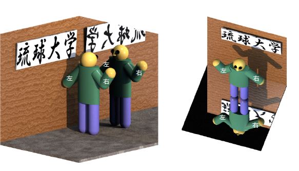
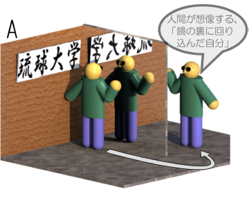
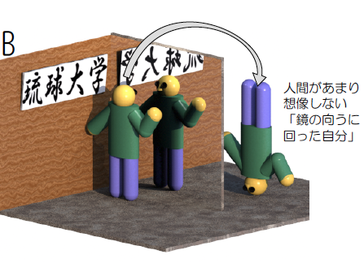

鏡は左右を反転する？
鏡は左右を反転するのに、どうして上下は反転しないの？
というのは、よく聞く疑問です。右の図は、右手をあげた人が鏡に写っているところを描いたものです。鏡の中（図の右。「琉球大学」という字が鏡文字になっているところ）には、左手をあげた人が存在してい（るように見え）ますね。では、どうして鏡は左右をひっくり返すのでしょう？？
「人間の目は左右についているからだ」という人もいますが、これはもちろんおかしい。片目をつぶって見たって、やっぱり左右反転しているように見えますからね。

実は上下が反転する場合だってちゃんとあります。たとえば右の図のように、床が鏡になっている場合です。鏡の中（下？）の人は、上下が逆さまになっています。
ただ、この図をよくみると、やっぱり鏡の中の人は右手じゃなくて左手をあげています！！（鏡の中では「さげています！！」）どうも不思議です。最初の図は左右しか反転しなかったのに、天井に鏡がある場合には左右と上下が両方反転している（ような気がする）。鏡の反転能力は置場所によって変わるんでしょうか？
そこでもう一度、この２枚の図をよぉく見てください。すると、実は我々が「反転」という言葉をいいかげんに使ったためにごまかされてしまっていることがわかるはずです。どういうことかというと、実は最初の図では左右は「反転」していないのです。
混乱するといけないのでここで「反転」という言葉の意味をしっかりと考えましょう。
反転というのはもちろん、「前後、上下、左右などの位置関係がひっくり変えること」です。では今の２枚の図の場合、位置関係がひっくり返っているのはそれぞれ、何でしょう。ここで示した図の場合、実は左右は反転していません。右にある右手は鏡の中にでも右にあります！

よく考えてみると、これらの図に描かれた鏡はどちらも、実は左右を反転していないことがわかります。鏡が反転しているのは、常に鏡に対して垂直な方向なのです。それなのになぜ我々は左右が反転している、と思うのでしょうか。それは無意識のうちに我々が「鏡の裏側に回ったら」ということを仮定しているからです。

つまり、「鏡の裏に回った自分」を思い浮かべ、それと鏡像を比べた結果「あ、左右が反転している」と判断しているのです。当然のことながら、自分が鏡の向こう側に回るとき、違う回り方をすれば上下が反転しているように見えるはずです。

「鏡は左右を反転するが上下を反転しない」というのは、我々が鏡の裏側に回る時の回り方を決めてしまっているからです。鏡は常に自分と垂直な方向だけを反転します。
実際に「鏡の裏に移動する」という操作（運動）をすると、実は二つの方向が入れ替わります。
Aの回り込み方の場合、左右と前後が反転してます。
Bの回り込み方の場合、上下と前後が反転しています。
一方、鏡は前後を反転します。そのため、人はAの場合「鏡が左右を入れ替えた」と考えることになります。
「反転」を２回すると、形としては元と同じになります。鏡の中の像をもう一回鏡に映すと元にもどるのと同じことです。２回反転 は「１８０度回転」と全く同じものになります。

上の図のように、２枚の鏡を９０度の角度をつけて合わせると、「左右の反転しない鏡」を作ることができます。

Question:では、この鏡を横倒しにすると、いったいどうなるでしょう？
上下・左右・前後をいっせいに、またはどれか一つを反転することを「パリティ変換」という名前で呼びます（二つ反転すると、「180度回転」と同じになってしまうので、「パリティ変換」とは別です）。パリティ変換をした時、元と同じになる量を、「パリティが偶」と言います。これに対し、パリティ変換すると元と符号が変るものを「パリティが奇」と言います。物理量で言うと、温度や圧力はパリティが偶です。力や速度はパリティが奇です。